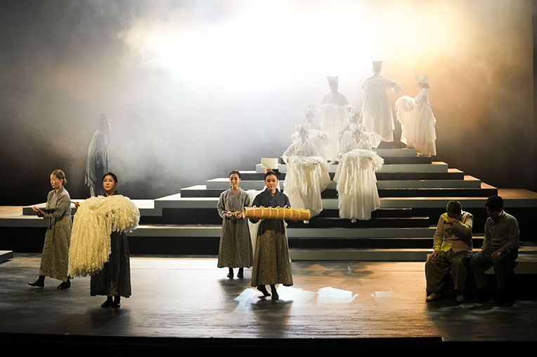

국립남도국악원 교류공연 <섬>
- 일시
- 2.17.(금) ~ 2.18.(토) 주중 19:30 주말 17:00
- 장소
- 연악당
- 관람료
- S석 10,000원 A석 8,000원
- 출연진/연출진
- 국립남도국악원 국악연주단 및 객원/ 강보람(극작), 김태욱(연출), 김영길(음악감독) 등
- 관람연령
- 취학아동이상
진도 지역의 고유한 정서를 담아낸 섬마을 사람들의 이야기
진도 섬을 떠나지 못하는 득심 할매의 가족 간의 갈등과 화해의 이야기로 14장으로 구성된 남도민속예술의 정수를 느낄 수 있는 작품.
세부프로그램
1장 미역섬의 여름 (현재) 2장 인자 뭍으로 나갑시다 (현재, 득심할매 집) 3장 달빛 아래 강강술래 (1943년 목포) 4장 정칠놈 따라 가슴이 둥덩애 (1944년, 득심네 뒷산) 5장 미역섬의 여름 (현재) 6장 넋이로다, 넋이로다 (1954년) 7장 미역보다 못하는 모지리 (1954년) 8장 이 농사를 어서 지어 (1960년~70년대) 9장 시절은 봄이요... (1980년, 읍내 장터) 10장 물같이 바람같이 살자 (1983년) 11장 구름이 세월을 가려도 (현재) 12장 파도에 씻기나 바람에 잠기나 (1986년) 13장 살살 바람에 달빛은 밝고 (현재) 14장 밤새 널어놓은 미역처럼 (현재)
